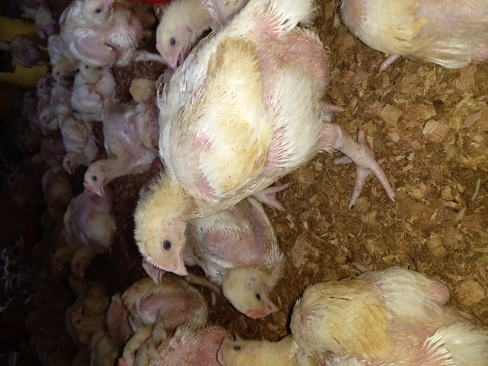

To Start Hatching Your Own Chiks Here's What You Need.
 Starting a chicken farming business can be a profitable venture, but it requires careful planning and investment. One key component of chicken farming is the use of an incubator to hatch eggs. In this article, we'll break down the costs and potential earnings of starting a small-scale chicken farming business using an incubator.
Firstly, let's discuss the cost of the incubator itself. A good-quality incubator will typically cost around 15,000 KSH. This investment is crucial for the success of your business, as it allows you to hatch up to 60 eggs at once over a 28-day period.
Next, let's consider the cost of the eggs. Fertilised eggs are more expensive than normal eggs, at a cost of around 15 KSH per egg. For a batch of 60 eggs, this will cost you 900 KSH. Without fertilised eggs, your eggs will not hatch, so this is an essential expense.
Once the eggs hatch, you will have day-old chicks that can be sold for around 100 KSH each. For a batch of 60 chicks, this will earn you 6,000 KSH after one month. However, it's important to note that this is not your total profit, as there are additional costs to consider.
One such cost is electricity, which is required to power the incubator. This can add up to around 1,100 KSH per month. Additionally, it's important to provide your chicks with proper vaccinations to ensure their health and growth. Consult with a local veterinarian to determine which vaccines are necessary, which can cost around 500 KSH